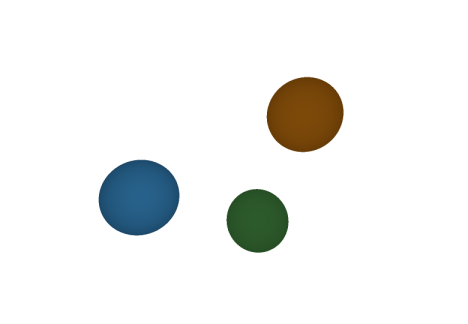
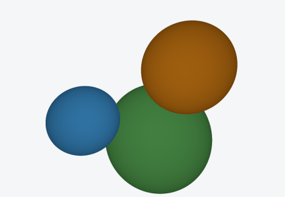
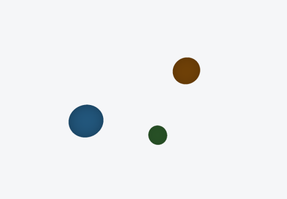
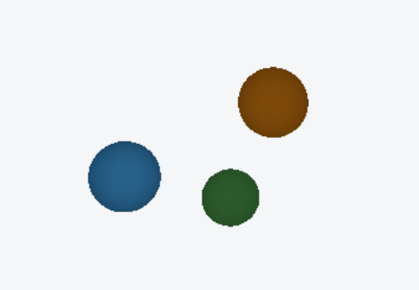
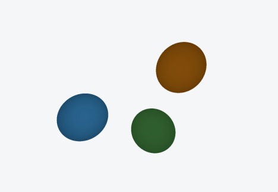
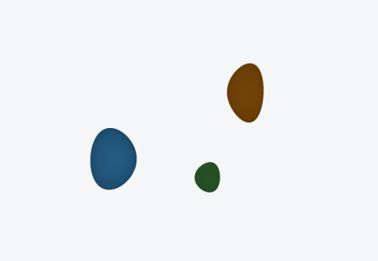
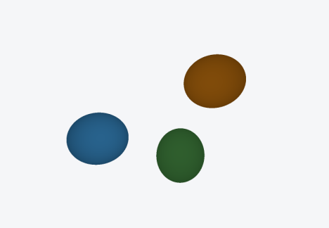
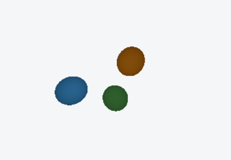
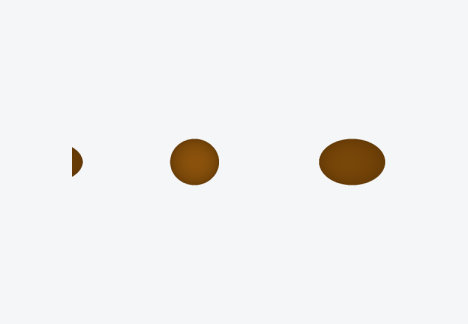

Inside the Thurston geometries
Source:vignettes/articles/thurston-geometries.Rmd
thurston-geometries.RmdAn in-space view follows light rays from an observer inside a geometry. The ray-marching backend supports the eight homogeneous three-dimensional geometries studied by Thurston. This article renders an intrinsic scene in each space, following the construction of Coulon, Matsumoto, Segerman and Trettel 2022. Installation is covered in Get started.
Positioning objects from the observer
A geodesic is the path followed by a freely travelling ray in a geometry. Place three balls by travelling along three initial directions from the origin. Their centres are at intrinsic distances of 1.5, 1.9 and 2.2 units, and their radii are 0.22, 0.28 and 0.28. The same directions, distances and radii are used in each scene, so changes in appearance come from the geometry.
directions <- rbind(c(-0.4, -0.15, 1), c(0.3, 0.2, 1), c(0.1, -0.25, 1))
distances <- c(1.5, 1.9, 2.2)
radii <- c(0.22, 0.28, 0.28)
colours <- c("#2E6F9E", "#9E5E0F", "#3F7A3D")
inside <- function(geometry) {
balls <- lapply(1:3, function(i) {
centre <- geodesic_3d(geometry, direction = directions[i, ],
distance = distances[i])$position
annotation_thurston_3d(centre = as.numeric(centre), radius = radii[i],
fill = colours[i])
})
ggplot() + balls + theme_void() +
coord_3d(backend = backend_3d("raymarch", geometry = geometry,
dpi = 52, antialias = 1, max_distance = 3.5, max_steps = 256))
}The initial observer is the origin and the view points along its positive third frame direction. Intrinsic primitives use their geometry’s chart coordinates. Ordinary point, path and mesh layers are rejected by this backend; use balls, cylinders, half-spaces or chart-defined traced SDFs.
Euclidean space
Euclidean space has the familiar flat metric. Rays are straight and the angular size of a small ball decreases with its distance. The three balls provide a reference for the curved spaces below.
inside("e3")
Spherical space
Spherical three-space has positive curvature. Neighbouring rays can reconverge, and geodesics return after a full circuit. Its stereographic chart represents the space in three coordinates; the renderer follows the intrinsic rays across the chart’s pole. The more distant balls occupy larger angular regions in this scene.
inside("s3")
Hyperbolic space
Hyperbolic three-space has negative curvature. Neighbouring rays diverge, which makes distant balls occupy smaller angles. Coordinates use the open Poincare ball: every centre and observer must have Euclidean norm below one. The geodesic positioning above supplies valid chart coordinates.
inside("h3")
Spherical plane times a line
The product of a sphere and a Euclidean line curves the first two directions and leaves the third direction flat. Rays can reconverge in the spherical factor while separating along the line. This directional dependence changes the apparent outlines of balls viewed obliquely to the line.
inside("s2xe")
Hyperbolic plane times a line
The product of a hyperbolic plane and a Euclidean line expands ray separations in its curved factor. Its line direction remains flat. The first two chart coordinates lie in the open Poincare disk, and the third records distance along the line.
inside("h2xe")Nil
Nil couples horizontal movement to the vertical coordinate. A horizontal loop can produce vertical displacement, and geodesics with a vertical component curve in the horizontal directions. The chart uses ordinary three-component coordinates with this coupled distance rule. Intrinsic balls can have asymmetric apparent outlines away from the viewing axis.
inside("nil")
Sol
Sol stretches one horizontal direction and contracts the other as height changes. Rotating a viewing direction therefore changes how rays separate and how a surface appears. The ball primitive here uses the approximate level set described in section 11.5 of Coulon and colleagues, with horizontal weights that vary exponentially with height. These shapes illustrate that approximation; their level-set definition is approximate.
inside("sol")
The universal cover of SL(2, R)
This geometry combines a hyperbolic base with an unwrapped fibre direction. The fibre records a continuously accumulated rotation; travelling around the base changes that rotation. The chart uses two hyperboloid coordinates and the unwrapped fibre coordinate. The renderer’s geodesics and distance calculation account for the coupling.
inside("sl2r")
Moving and turning the observer
Set the observer location and orientation on
backend_3d(). The columns of facing are the
right, up and forward unit tangent vectors in the observer’s orthonormal
frame. The example below moves sideways in Nil and turns by five
degrees. The backend’s field of view controls the full-panel perspective
image; the exterior camera’s azimuth and elevation do not set this
view.
angle <- 5 * pi / 180
facing <- matrix(c(cos(angle), 0, -sin(angle), 0, 1, 0,
sin(angle), 0, cos(angle)), 3, 3)
inside("nil") + coord_3d(backend = backend_3d("raymarch", geometry = "nil",
observer = c(0.05, 0, 0), facing = facing, fov = 90,
dpi = 52, antialias = 1, max_distance = 3.5, max_steps = 256))
The light is located at the observer. Its diffuse intensity depends
on the area density of geodesic spheres along the viewing ray. Use the
ambient and diffuse strengths of light_3d() to adjust
illumination. The maximum ray length and step count bound the rendering
work; small distant objects may need a longer range or more steps.
Following a ray numerically
The same geodesic kernel is available for numerical inspection. Its result contains positions, orthonormal-frame velocities, coordinate velocities, parallel-transport matrices and area densities. For a Euclidean ray the area density grows as squared distance; the following output compares it with the spherical and hyperbolic cases.
distances <- c(0.5, 1, 1.5)
areas <- data.frame(distance = distances,
Euclidean = geodesic_3d("e3", distance = distances)$area,
Spherical = geodesic_3d("s3", distance = distances)$area,
Hyperbolic = geodesic_3d("h3", distance = distances)$area)
knitr::kable(areas, digits = 3)| distance | Euclidean | Spherical | Hyperbolic |
|---|---|---|---|
| 0.5 | 0.25 | 0.230 | 0.272 |
| 1.0 | 1.00 | 0.708 | 1.381 |
| 1.5 | 2.25 | 0.995 | 4.534 |
Identifying domain faces
A quotient identifies boundary faces of a fundamental domain, the region used to represent the space. A ray crossing one face continues through its paired face with its tangent transported by the pairing isometry. This Euclidean example identifies the two x faces by translations of two units.
to_left <- to_right <- diag(4)
to_left[1, 4] <- -2
to_right[1, 4] <- 2
faces <- list(
thurston_portal_3d(c(1, 0, 0, 0), 1, to_left),
thurston_portal_3d(c(-1, 0, 0, 0), 1, to_right))Place a ball beyond the right-facing boundary in the identified
space. Repeated copies become visible along rays that cross the domain
faces. For other geometries, supply isometries in the embeddings
documented by thurston_portal_3d() and every paired face of
the intended domain.
ggplot() + annotation_thurston_3d(centre = c(-0.5, 0, 1.5), radius = 0.3,
fill = "#9E5E0F") + theme_void() +
coord_3d(backend = backend_3d("raymarch", quotient = faces,
fov = 110, max_distance = 5, dpi = 52, antialias = 1))